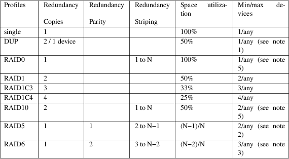
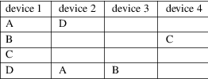
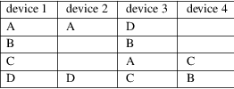
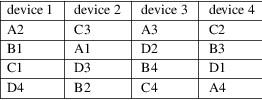
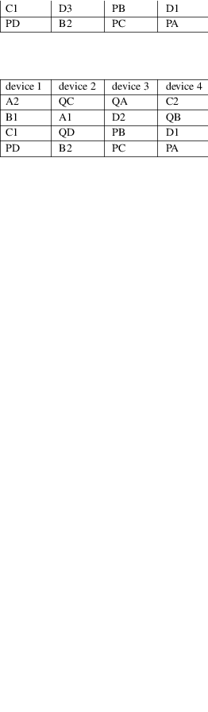
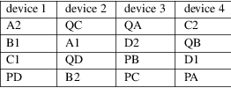

mkfs.btrfs − create a btrfs filesystem
mkfs.btrfs [options] <device> [<device>...]
mkfs.btrfs is used to create the btrfs filesystem on a single or multiple devices. The device is typically a block device but can be a file−backed image as well. Multiple devices are grouped by UUID of the filesystem.
Before mounting such filesystem, the kernel module must know all the devices either via preceding execution of btrfs device scan or using the device mount option. See section MULTIPLE DEVICES for more details.
The default block group profiles for data and metadata depend on number of devices and possibly other factors. It's recommended to use specific profiles but the defaults should be OK and allowing future conversions to other profiles. Please see options −d and −m for further details and btrfs−balance(8) for the profile conversion post mkfs.
−b|−−byte−count <size>
Specify the size of each device as seen by the filesystem. If not set, the entire device size is used. The total filesystem size will be sum of all device sizes, for a single device filesystem the option effectively specifies the size of the filesystem.
−−csum <type>, −−checksum <type>
Specify the checksum algorithm. Default is crc32c. Valid values are crc32c, xxhash, sha256 or blake2. To mount such filesystem kernel must support the checksums as well. See CHECKSUM ALGORITHMS in btrfs(5).
−d|−−data <profile>
Specify the profile for the data block groups. Valid values are raid0, raid1, raid1c3, raid1c4, raid5, raid6, raid10 or single or dup (case does not matter).
See DUP PROFILES ON A SINGLE DEVICE for more details.
On multiple devices, the default was raid0 until version 5.7, while it is single since version 5.8. You can still select raid0 manually, but it was not suitable as default.
−m|−−metadata <profile>
Specify the profile for the metadata block groups. Valid values are raid0, raid1, raid1c3, raid1c4, raid5, raid6, raid10, single or dup (case does not matter).
Default on a single device filesystem is DUP and is recommended for metadata in general. The duplication might not be necessary in some use cases and it's up to the user to changed that at mkfs time or later. This depends on hardware that could potentially deduplicate the blocks again but this cannot be detected at mkfs time.
NOTE:
Up to version 5.14 there was a detection of a SSD device (more precisely if it's a rotational device, determined by the contents of file /sys/block/DEV/queue/rotational) that used to select single. This has changed in version 5.15 to be always dup.
Note that the rotational status can be arbitrarily set by the underlying block device driver and may not reflect the true status (network block device, memory−backed SCSI devices, real block device behind some additional device mapper layer, etc). It's recommended to always set the options −−data/−−metadata to avoid confusion and unexpected results.
See DUP PROFILES ON A SINGLE DEVICE for more details.
On multiple devices the default is raid1.
−M|−−mixed
Normally the data and metadata block groups are isolated. The mixed mode will remove the isolation and store both types in the same block group type. This helps to utilize the free space regardless of the purpose and is suitable for small devices. The separate allocation of block groups leads to a situation where the space is reserved for the other block group type, is not available for allocation and can lead to ENOSPC state.
The recommended size for the mixed mode is for filesystems less than 1GiB. The soft recommendation is to use it for filesystems smaller than 5GiB. The mixed mode may lead to degraded performance on larger filesystems, but is otherwise usable, even on multiple devices.
The nodesize and sectorsize must be equal, and the block group types must match.
NOTE:
Versions up to 4.2.x forced the mixed mode for devices smaller than 1GiB. This has been removed in 4.3+ as it caused some usability issues.
Mixed profile cannot be used together with other profiles. It can only be set at creation time. Conversion to or from mixed profile is not implemented.
−n|−−nodesize <size>
Specify the nodesize, the tree block size in which btrfs stores metadata. The default value is 16KiB (16384) or the page size, whichever is bigger. Must be a multiple of the sectorsize and a power of 2, but not larger than 64KiB (65536). Leafsize always equals nodesize and the options are aliases.
Smaller node size increases fragmentation but leads to taller b−trees which in turn leads to lower locking contention. Higher node sizes give better packing and less fragmentation at the cost of more expensive memory operations while updating the metadata blocks.
NOTE:
Versions up to 3.11 set the nodesize to 4KiB.
−s|−−sectorsize <size>
Specify the sectorsize, the minimum data block allocation unit.
The default value is the page size and is autodetected. If the sectorsize differs from the page size, the created filesystem may not be mountable by the running kernel. Therefore it is not recommended to use this option unless you are going to mount it on a system with the appropriate page size.
−L|−−label <string>
Specify a label for the filesystem. The string should be less than 256 bytes and must not contain newline characters.
−K|−−nodiscard
Do not perform whole device TRIM operation on devices that are capable of that. This does not affect discard/trim operation when the filesystem is mounted. Please see the mount option discard for that in btrfs(5).
−r|−−rootdir <rootdir>
Populate the toplevel subvolume with files from rootdir. This does not require root permissions to write the new files or to mount the filesystem.
NOTE:
This option may enlarge the image or file to ensure it's big enough to contain the files from rootdir. Since version 4.14.1 the filesystem size is not minimized. Please see option −−shrink if you need that functionality.
−−shrink
Shrink the filesystem to its minimal size, only works with −−rootdir option.
If the destination block device is a regular file, this option will also truncate the file to the minimal size. Otherwise it will reduce the filesystem available space. Extra space will not be usable unless the filesystem is mounted and resized using btrfs filesystem resize.
NOTE:
Prior to version 4.14.1, the shrinking was done automatically.
−O|−−features <feature1>[,<feature2>...]
A list of filesystem features turned on at mkfs time. Not all features are supported by old kernels. To disable a feature, prefix it with ^.
See section FILESYSTEM FEATURES for more details. To see all available features that mkfs.btrfs supports run:
$ mkfs.btrfs −O list−all
−f|−−force
Forcibly overwrite the block devices when an existing filesystem is detected. By default, mkfs.btrfs will utilize libblkid to check for any known filesystem on the devices. Alternatively you can use the wipefs utility to clear the devices.
−q|−−quiet
Print only error or warning messages. Options −−features or −−help are unaffected. Resets any previous effects of −−verbose.
−U|−−uuid <UUID>
Create the filesystem with the given UUID. The UUID must not exist on any filesystem currently present.
−v|−−verbose
Increase verbosity level, default is 1.
−V|−−version
Print the mkfs.btrfs version and exit.
|
−−help |
Print help. |
−l|−−leafsize <size>
Removed in 6.0, used to be alias for −−nodesize.
−R|−−runtime−features <feature1>[,<feature2>...]
Removed in 6.3, was used to specify features not affecting on−disk format. Now all such features are merged into −O|−−features option. The option −R will stay for backward compatibility.
The default unit is byte. All size parameters accept suffixes in the 1024 base. The recognized suffixes are: k, m, g, t, p, e, both uppercase and lowercase.
Before mounting a multiple device filesystem, the kernel module must know the association of the block devices that are attached to the filesystem UUID.
There is typically no action needed from the user. On a system that utilizes a udev−like daemon, any new block device is automatically registered. The rules call btrfs device scan.
The same command can be used to trigger the device scanning if the btrfs kernel module is reloaded (naturally all previous information about the device registration is lost).
Another possibility is to use the mount options device to specify the list of devices to scan at the time of mount.
# mount −o device=/dev/sdb,device=/dev/sdc /dev/sda /mnt
NOTE:
This means only scanning, if the devices do not exist in the system, mount will fail anyway. This can happen on systems without initramfs/initrd and root partition created with RAID1/10/5/6 profiles. The mount action can happen before all block devices are discovered. The waiting is usually done on the initramfs/initrd systems.
WARNING:
RAID5/6 has known problems and should not be used in production.
Features that
can be enabled during creation time. See also
btrfs(5) section FILESYSTEM FEATURES.
mixed−bg
(kernel support since 2.6.37)
mixed data and metadata block groups, also set by option −−mixed
|
extref |
(default since btrfs−progs 3.12, kernel support since 3.7) |
increased hardlink limit per file in a directory to 65536, older kernels supported a varying number of hardlinks depending on the sum of all file name sizes that can be stored into one metadata block
|
raid56 |
(kernel support since 3.9) |
extended format for RAID5/6, also enabled if RAID5 or RAID6 block groups are selected
skinny−metadata
(default since btrfs−progs 3.18, kernel support since 3.10)
reduced−size metadata for extent references, saves a few percent of metadata
no−holes
(default since btrfs−progs 5.15, kernel support since 3.14)
improved representation of file extents where holes are not explicitly stored as an extent, saves a few percent of metadata if sparse files are used
|
zoned |
(kernel support since 5.12) |
zoned mode, data allocation and write friendly to zoned/SMR/ZBC/ZNS devices, see ZONED MODE in btrfs(5), the mode is automatically selected when a zoned device is detected
|
quota |
(kernel support since 3.4) |
Enable quota support (qgroups). The qgroup accounting will be consistent, can be used together with −−rootdir. See also btrfs−quota(8).
free−space−tree
(default since btrfs−progs 5.15, kernel support since 4.5)
Enable the free space tree (mount option space_cache=v2) for persisting the free space cache.
block−group−tree
(kernel support since 6.1)
Enable the block group tree to greatly reduce mount time for large filesystems.
The highlevel organizational units of a filesystem are block groups of three types: data, metadata and system.
|
DATA |
store data blocks and nothing else |
METADATA
store internal metadata in b−trees, can store file data if they fit into the inline limit
|
SYSTEM |
store structures that describe the mapping between the physical devices and the linear logical space representing the filesystem |
Other terms
commonly used:
block group, chunk
a logical range of space of a given profile, stores data, metadata or both; sometimes the terms are used interchangeably
A typical size of metadata block group is 256MiB (filesystem smaller than 50GiB) and 1GiB (larger than 50GiB), for data it's 1GiB. The system block group size is a few megabytes.
|
RAID |
a block group profile type that utilizes RAID−like features on multiple devices: striping, mirroring, parity |
profile
when used in connection with block groups refers to the allocation strategy and constraints, see the section PROFILES for more details
There are the following block group types available:

WARNING:
It's not recommended to create filesystems with RAID0/1/10/5/6 profiles on partitions from the same device. Neither redundancy nor performance will be improved.
Note 1: DUP may exist on more than 1 device if it starts on a single device and another one is added. Since version 4.5.1, mkfs.btrfs will let you create DUP on multiple devices without restrictions.
Note 2: It's not recommended to use 2 devices with RAID5. In that case, parity stripe will contain the same data as the data stripe, making RAID5 degraded to RAID1 with more overhead.
Note 3: It's also not recommended to use 3 devices with RAID6, unless you want to get effectively 3 copies in a RAID1−like manner (but not exactly that).
Note 4: Since kernel 5.5 it's possible to use RAID1C3 as replacement for RAID6, higher space cost but reliable.
Note 5: Since kernel 5.15 it's possible to use (mount, convert profiles) RAID0 on one device and RAID10 on two devices.
PROFILE
LAYOUT
For the following examples, assume devices numbered by 1, 2,
3 and 4, data or metadata blocks A, B, C, D, with possible
stripes e.g. A1, A2 that would be logically A, etc. For
parity profiles PA and QA are parity and syndrome,
associated with the given stripe. The simple layouts single
or DUP are left out. Actual physical block placement on
devices depends on current state of the free/allocated space
and may appear random. All devices are assumed to be present
at the time of the blocks would have been written.
RAID1

RAID1C3

RAID0

RAID5

RAID6

The mkfs utility will let the user create a filesystem with profiles that write the logical blocks to 2 physical locations. Whether there are really 2 physical copies highly depends on the underlying device type.
For example, a SSD drive can remap the blocks internally to a single copy−−thus deduplicating them. This negates the purpose of increased redundancy and just wastes filesystem space without providing the expected level of redundancy.
The duplicated data/metadata may still be useful to statistically improve the chances on a device that might perform some internal optimizations. The actual details are not usually disclosed by vendors. For example we could expect that not all blocks get deduplicated. This will provide a non−zero probability of recovery compared to a zero chance if the single profile is used. The user should make the tradeoff decision. The deduplication in SSDs is thought to be widely available so the reason behind the mkfs default is to not give a false sense of redundancy.
As another example, the widely used USB flash or SD cards use a translation layer between the logical and physical view of the device. The data lifetime may be affected by frequent plugging. The memory cells could get damaged, hopefully not destroying both copies of particular data in case of DUP.
The wear levelling techniques can also lead to reduced redundancy, even if the device does not do any deduplication. The controllers may put data written in a short timespan into the same physical storage unit (cell, block etc). In case this unit dies, both copies are lost. BTRFS does not add any artificial delay between metadata writes.
The traditional rotational hard drives usually fail at the sector level.
In any case, a device that starts to misbehave and repairs from the DUP copy should be replaced! DUP is not backup.
SMALL FILESYSTEMS AND LARGE NODESIZE
The combination of small filesystem size and large nodesize is not recommended in general and can lead to various ENOSPC−related issues during mount time or runtime.
Since mixed block group creation is optional, we allow small filesystem instances with differing values for sectorsize and nodesize to be created and could end up in the following situation:
# mkfs.btrfs −f −n 65536 /dev/loop0 btrfs−progs v3.19−rc2−405−g976307c See http://btrfs.wiki.kernel.org for more information. Performing full device TRIM (512.00MiB) ... Label: (null) UUID: 49fab72e−0c8b−466b−a3ca−d1bfe56475f0 Node size: 65536 Sector size: 4096 Filesystem size: 512.00MiB Block group profiles: Data: single 8.00MiB Metadata: DUP 40.00MiB System: DUP 12.00MiB SSD detected: no Incompat features: extref, skinny−metadata Number of devices: 1 Devices: ID SIZE PATH 1 512.00MiB /dev/loop0 # mount /dev/loop0 /mnt/ mount: mount /dev/loop0 on /mnt failed: No space left on device
The ENOSPC occurs during the creation of the UUID tree. This is caused by large metadata blocks and space reservation strategy that allocates more than can fit into the filesystem.
btrfs is part of btrfs−progs. Please refer to the documentation at https://btrfs.readthedocs.io.
btrfs(5), btrfs(8), btrfs−balance(8), wipefs(8)